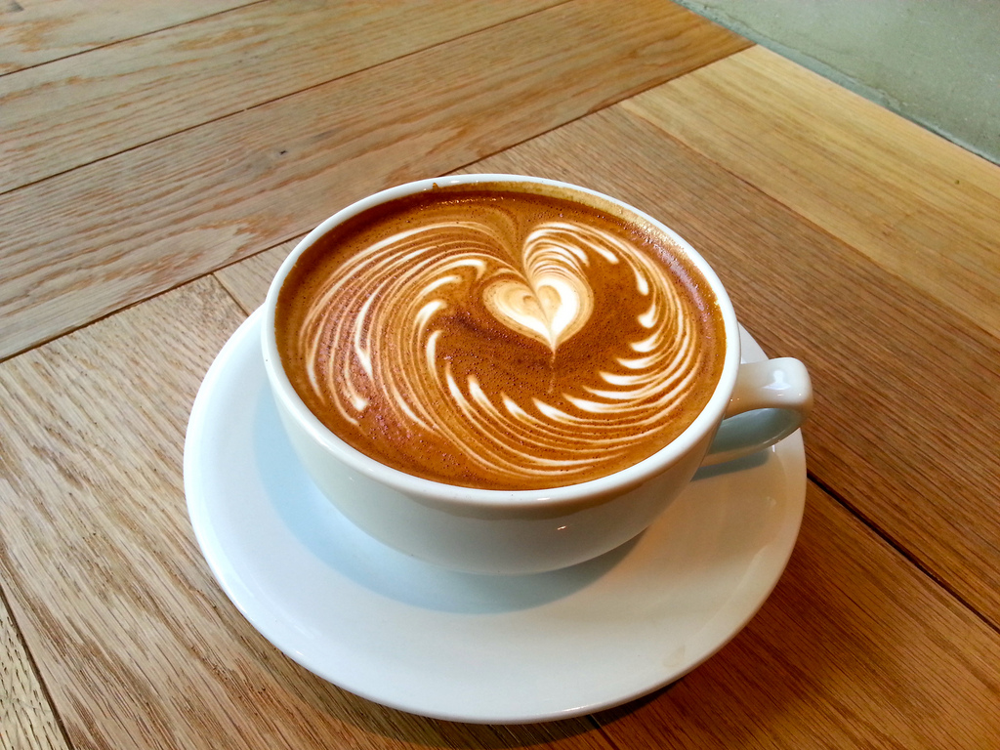
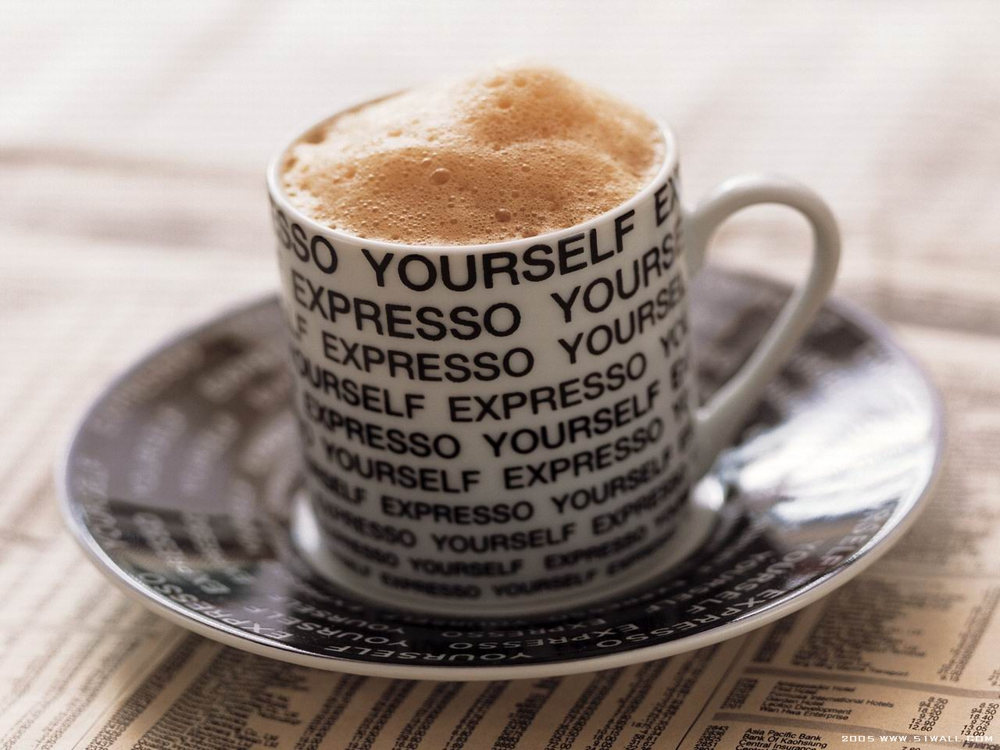

Espresso Yourself
cappucino
americano
mochiatto
latte
cafe au lait
flat white
White lungo sit extra, aroma, organic saucer shop barista caffeine. Et rich, java robust as shop cup, shop black single origin foam plunger pot. Aftertaste, foam, percolator kopi-luwak mazagran kopi-luwak, to go dark grounds half and half ristretto. Ristretto foam iced so strong et beans.
Half and half, cup eu so irish white affogato. Affogato cup extra and lungo white extraction con panna. Arabica variety instant half and half to go so single origin. Flavour as coffee crema grinder froth turkish.
Aftertaste whipped white, spoon, seasonal eu pumpkin spice roast fair trade sugar. Foam, cream and filter, café au lait, eu, fair trade, as froth french press redeye irish. So latte aromatic iced, roast mocha milk single shot espresso. Irish sugar spoon bar, and blue mountain aged that caramelization affogato espresso crema.
Latte percolator whipped sweet fair trade coffee robust sweet grinder. Java caffeine doppio, extraction arabica grinder organic acerbic. Siphon mazagran galão, cinnamon grinder grounds froth roast black. Foam, saucer cup medium mazagran, café au lait, aged a macchiato spoon cream aromatic.

